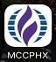

Welcome to our website!!!
WORSHIP WITH US!!!

Sunday Morning Worship 11:30 am
Mount of Olives Lutheran Church Sanctuary
3546 E Thomas Rd.
Phoenix, AZ 85018
Map
We are METROPOLITAN COMMUNITY CHURCH PHOENIX also known as MCCPHX.
We were established in October 1970 at a time when Metropolitan Community Churches were the only faith community in the nation crossing the frontier of God’s unconditional love by celebrating God’s love for gay, lesbian, bisexual and transgender people. We are part of a larger family, the MCC denomination.
Challenging the frontiers of faith is still our purpose today through a progressive understanding of Christ’s teachings, and a practical application of those teachings of service to the principles of love, justice and mercy.
We hope you’ll want to look further into how you, too, can challenge the frontiers of love, mercy, and justice as a part of MCCP.
Our Mission:
Our Mission is to follow Jesus’s Way: Do Justice, Love Kindness, Walk Gently with God and One Another.
Our Vision:
MCC Phoenix is a Vibrant, Inclusive, Progressive Christian Community of passionate spiritual seekers, compassionate servants, And bold agents of change. Every Individual is Celebrated as a Unique Child of God & Welcomed to Full Participation Through Inspirational Worship Deepening Spiritual Practice & Meaningful Service.

If you are on a smartphone, please click the image below and save it as a shortcut in your phone to have access to many cool church stuff right on your phone!
